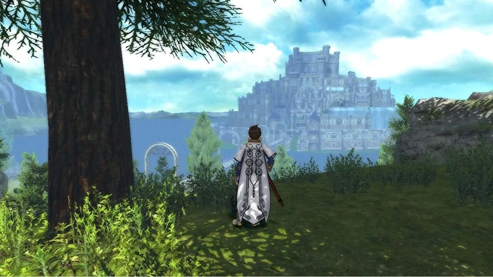

La serie Tales of es una serie de videojuegos estilo JRPGs desarrollado actualmente por la compañia BANDAI NAMCO que se remonta al año 1995 con el lanzamiento del primer juego de la Saga "Tales of Phantasia" para la consola Super Nintendo.
A la fecha multiples titulos principales, remakes, spin-offs e incluso para dispositivos moviles han salido al mercado.
Mezclando la historia del mundo real, folclore y mitologia de diversas naciones, inspiracion tomada del padre de los RPG "Calabozos y Dragones" y series de fantasia los desarrolladores lograron crear los cimientos de mundos y universos llenos de magia que daban vida a las realidades y vidas de sus habitantes.

Si bien cada entrada tiene su propia historia y personajes, los juegos comparten ciertas similitudes en cuanto a la narrativa e historia del mundo en el que se desarrollan presentando temas filosoficos envueltos en crisis y desastres.